library(agridat) #pacote em que está armazendado o banco de dados que será utilizado
library(openxlsx) #salvando o banco de dados
library(DT) #cria tabelas interativas
library(tidyverse)
library(skimr)
library(dplyr)
library(tidyverse)
library(gganimate)Análises exploratórias dos dados do experimento
Pacotes usados
Análises
Carregando do banco de dados
data(silva.cotton)
dat <- silva.cotton
View(dat)
write.xlsx(dat, file = "dat.xlsx")
datatable(dat) #Cria a tabela interativa no arquivo HTMLAnálises exploratórias
Estrutura geral dos dados
Visualização geral da estrutura dos dados
str(dat)'data.frame': 250 obs. of 9 variables:
$ stage : Factor w/ 5 levels "blossom","boll",..: 5 5 5 5 5 5 5 5 5 5 ...
$ defoliation : int 0 0 0 0 0 25 25 25 25 25 ...
$ plant : int 1 1 1 1 1 1 1 1 1 1 ...
$ rep : Factor w/ 5 levels "R1","R2","R3",..: 1 2 3 4 5 1 2 3 4 5 ...
$ reproductive: int 5 4 4 6 5 5 5 6 5 5 ...
$ bolls : int 5 4 4 5 5 5 5 5 5 5 ...
$ height : num 73 63 65.5 85 72 77 74 59 81 75 ...
$ nodes : int 16 17 14 15 15 15 17 10 14 13 ...
$ weight : num 33.2 28.7 31.5 28.9 36.4 ...summary(dat) stage defoliation plant rep reproductive
blossom :50 Min. : 0 Min. :1.0 R1:50 Min. :1.000
boll :50 1st Qu.: 25 1st Qu.:1.0 R2:50 1st Qu.:3.000
bollopen :50 Median : 50 Median :1.5 R3:50 Median :4.000
flowerbud :50 Mean : 50 Mean :1.5 R4:50 Mean :4.112
vegetative:50 3rd Qu.: 75 3rd Qu.:2.0 R5:50 3rd Qu.:5.000
Max. :100 Max. :2.0 Max. :8.000
bolls height nodes weight
Min. :0.000 Min. :43.00 Min. :10.00 Min. : 4.735
1st Qu.:3.000 1st Qu.:63.00 1st Qu.:14.00 1st Qu.:22.560
Median :4.000 Median :70.00 Median :15.00 Median :26.994
Mean :3.912 Mean :69.22 Mean :14.91 Mean :25.780
3rd Qu.:5.000 3rd Qu.:74.88 3rd Qu.:16.00 3rd Qu.:30.010
Max. :8.000 Max. :92.00 Max. :20.00 Max. :38.320
NA's :125 skimr::skim(dat)| Name | dat |
| Number of rows | 250 |
| Number of columns | 9 |
| _______________________ | |
| Column type frequency: | |
| factor | 2 |
| numeric | 7 |
| ________________________ | |
| Group variables | None |
Variable type: factor
| skim_variable | n_missing | complete_rate | ordered | n_unique | top_counts |
|---|---|---|---|---|---|
| stage | 0 | 1 | FALSE | 5 | blo: 50, bol: 50, bol: 50, flo: 50 |
| rep | 0 | 1 | FALSE | 5 | R1: 50, R2: 50, R3: 50, R4: 50 |
Variable type: numeric
| skim_variable | n_missing | complete_rate | mean | sd | p0 | p25 | p50 | p75 | p100 | hist |
|---|---|---|---|---|---|---|---|---|---|---|
| defoliation | 0 | 1.0 | 50.00 | 35.43 | 0.00 | 25.00 | 50.00 | 75.00 | 100.00 | ▇▇▇▇▇ |
| plant | 0 | 1.0 | 1.50 | 0.50 | 1.00 | 1.00 | 1.50 | 2.00 | 2.00 | ▇▁▁▁▇ |
| reproductive | 0 | 1.0 | 4.11 | 1.15 | 1.00 | 3.00 | 4.00 | 5.00 | 8.00 | ▁▂▇▁▁ |
| bolls | 0 | 1.0 | 3.91 | 1.29 | 0.00 | 3.00 | 4.00 | 5.00 | 8.00 | ▁▆▇▇▁ |
| height | 0 | 1.0 | 69.22 | 8.28 | 43.00 | 63.00 | 70.00 | 74.88 | 92.00 | ▁▃▇▇▁ |
| nodes | 0 | 1.0 | 14.91 | 1.76 | 10.00 | 14.00 | 15.00 | 16.00 | 20.00 | ▂▆▇▃▁ |
| weight | 125 | 0.5 | 25.78 | 6.83 | 4.74 | 22.56 | 26.99 | 30.01 | 38.32 | ▁▁▃▇▂ |
Histograma de frequências
Usaremos o pacote tidyverse (que inclui o ggplot2) para visualização de cada variável resposta por meio dos histogramas de frequência
dat_long <- dat |>
pivot_longer(cols = c(height, nodes, reproductive, bolls, weight),
names_to = "variavel_resposta",
values_to = "valor") #reorganizando os dados para formato longo
# Histogramas + densidade
ggplot(dat_long, aes(x = valor)) +
geom_histogram(aes(y = ..density..), bins = 30, fill = "lightblue", color = "gray30") +
geom_density(color = "red") +
facet_wrap(~variavel_resposta, scales = "free", ncol = 2) +
theme_minimal() +
labs(title = "Distribuição das variáveis resposta", x = NULL, y = "Densidade")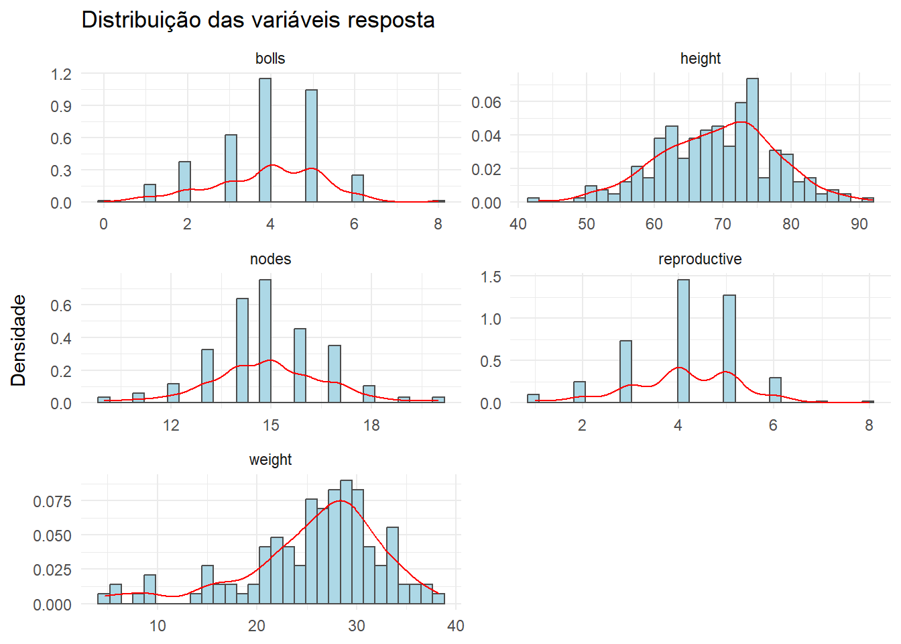
Gráficos BoxPlot
Em seguida, construimos gráficos do tipo boxplot para entender como a desfolha afeta cada variável. As variáveis resposta estarão em função da desfolha, facetando por estágio de desenvolvimento.
dat |>
ggplot(aes(x = as.factor(defoliation), y = height)) +
geom_boxplot(outlier.colour = NA) +
geom_jitter(width = 0.1, color = "gray20") +
theme_grey() +
labs(x = "Defoliation",
y = "Plant height") +
facet_wrap(~ stage)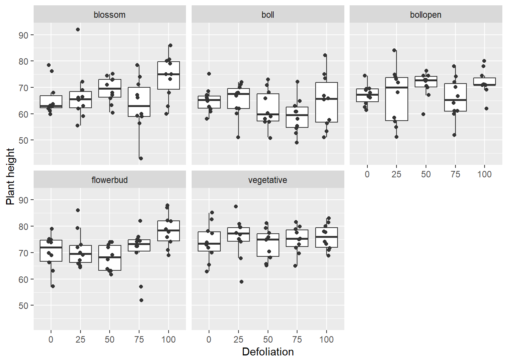
Percebemos que, ao invés de criar um gráfico para cada variável resposta, é mais viável criarmos um gráfico em que cada linha representa uma variável resposta, e cada coluna representa um estágio de desenvolvimento
dat_long <- dat |>
pivot_longer(cols = c(height, nodes, reproductive, bolls, weight),
names_to = "variavel_resposta",
values_to = "valor") #reorganizando os dados para formato longo
# Gráfico boxplot
dat_long |>
ggplot(aes(x = as.factor(defoliation), y = valor)) +
geom_boxplot(outlier.colour = NA) +
geom_jitter(width = 0.1, color = "gray20", alpha = 0.6) +
theme_grey() +
labs(x = "Defoliation", y = NULL) +
facet_grid(rows = vars(variavel_resposta), cols = vars(stage), scales = "free_y") +
theme(strip.text = element_text(face = "bold"))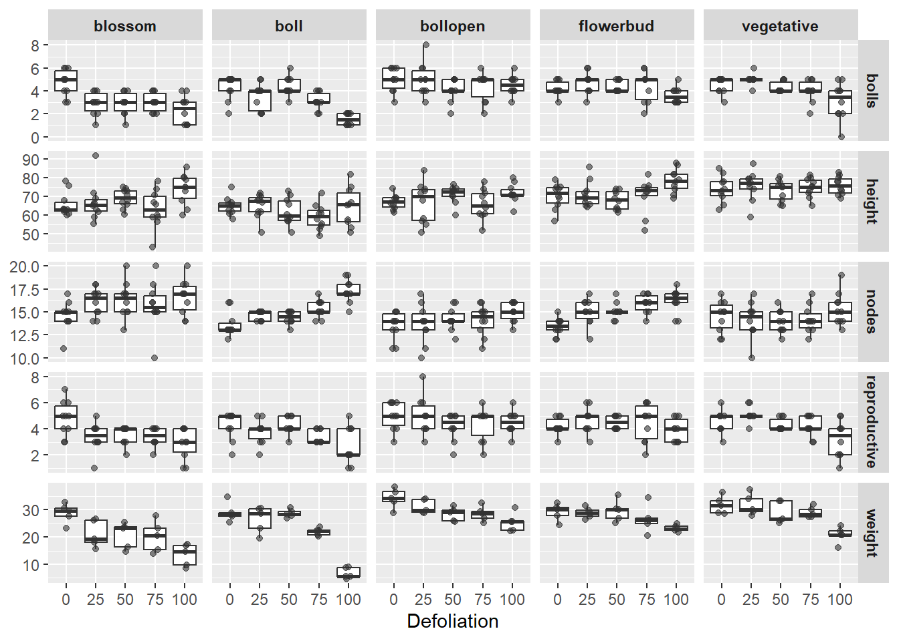
Linhas de tendência
Agora, plotaremos os gráficos de linhas para cada variável análisada para verificar a tendência dos dados.
Peso médio das maçãs
# Filtrar apenas linhas com valores válidos de 'weight'
dados_validos <- dat %>%
filter(!is.na(weight))
#head(dados_validos)
#str(dados_validos)
#colnames(dados_validos)
dados_validos %>%
group_by(stage, defoliation)# A tibble: 125 × 9
# Groups: stage, defoliation [25]
stage defoliation plant rep reproductive bolls height nodes weight
<fct> <int> <int> <fct> <int> <int> <dbl> <int> <dbl>
1 vegetative 0 1 R1 5 5 73 16 33.2
2 vegetative 0 1 R2 4 4 63 17 28.7
3 vegetative 0 1 R3 4 4 65.5 14 31.5
4 vegetative 0 1 R4 6 5 85 15 28.9
5 vegetative 0 1 R5 5 5 72 15 36.4
6 vegetative 25 1 R1 5 5 77 15 34.1
7 vegetative 25 1 R2 5 5 74 17 30.0
8 vegetative 25 1 R3 6 5 59 10 37.3
9 vegetative 25 1 R4 5 5 81 14 27.9
10 vegetative 25 1 R5 5 5 75 13 29.3
# ℹ 115 more rows# Calcular média e erro padrão por stage x defoliation
dados_summary2 <- dados_validos %>%
group_by(stage, defoliation) %>%
summarise(
mean_weight = mean(weight, na.rm = TRUE),
sd_weight = sd(weight, na.rm = TRUE),
n = n(),
se_weight = sd_weight / sqrt(n)
) %>%
ungroup()
# Garantir que defoliation é numérico (caso tenha vindo como string)
dados_summary2$defoliation <- as.numeric(as.character(dados_summary2$defoliation))
# Plotar o gráfico
ggplot(dados_summary2, aes(x = defoliation, y = mean_weight, color = stage, group = stage)) +
geom_line(size = 1) +
geom_point(size = 2) +
geom_errorbar(aes(ymin = mean_weight - se_weight, ymax = mean_weight + se_weight), width = 5) +
labs(
title = "Peso médio das estruturas reprodutivas por estádio e desfolha",
x = "Desfolha (%)",
y = "Peso médio (g)",
color = "Estádio"
) +
theme_gray() +
theme(plot.title = element_text(hjust = 0.5))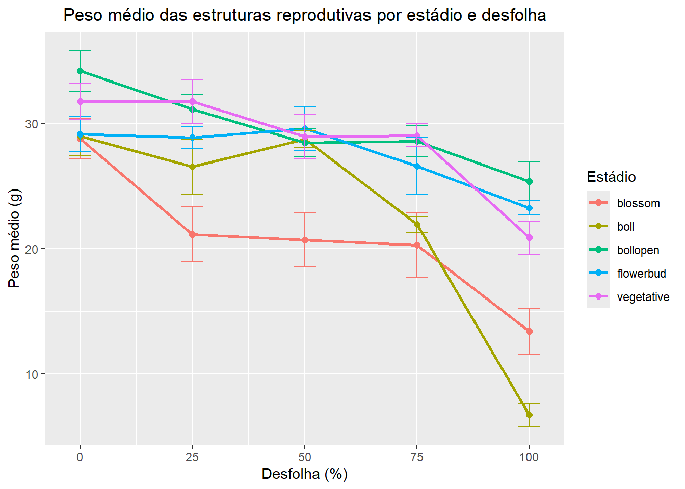
Gráfico dinâmico
# Gráfico base com ajustes de group
gif <- ggplot(dados_summary2, aes(x = defoliation, y = mean_weight, color = stage, group = stage)) +
geom_line(aes(group = stage), size = 1) +
geom_point(aes(group = stage), size = 2) +
geom_errorbar(aes(ymin = mean_weight - se_weight, ymax = mean_weight + se_weight), width = 5) +
labs(
title = "Peso médio das estruturas reprodutivas por estádio e desfolha",
x = "Desfolha (%)",
y = "Peso médio (g)",
color = "Estádio"
) +
theme_minimal() +
theme(plot.title = element_text(hjust = 0.5))
# Animação com transition_reveal
gif_sev <- gif + transition_reveal(along = defoliation)
# Animação com renderer gifski (mais estável)
animated_gif <- animate(gif_sev, renderer = gifski_renderer())
animated_gif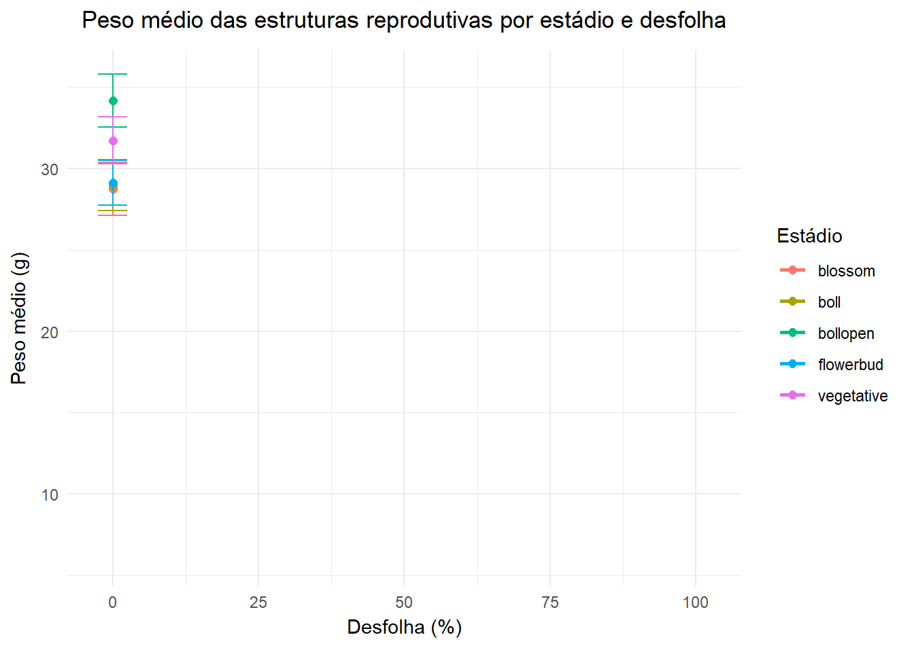
# Salvar o GIF
anim_save("imgs/gif_sev.gif", animation = animated_gif)Número de estruturas reprodutivas
# Calcular média e erro padrão por stage x defoliation para 'reproductive'
dados_summary <- dat %>%
group_by(stage, defoliation) %>%
summarise(
mean_reproductive = mean(reproductive),
sd_reproductive = sd(reproductive),
n = n(),
se_reproductive = sd_reproductive / sqrt(n)
) %>%
ungroup()
# Garantir que defoliation é numérico (caso venha como fator/character)
dados_summary$defoliation <- as.numeric(as.character(dados_summary$defoliation))
# Plotar gráfico para 'reproductive'
ggplot(dados_summary, aes(x = defoliation, y = mean_reproductive, color = stage, group = stage)) +
geom_line(size = 1) +
geom_point(size = 2) +
geom_errorbar(aes(ymin = mean_reproductive - se_reproductive, ymax = mean_reproductive + se_reproductive), width = 5) +
labs(
title = "Número médio de estruturas reprodutivas por estádio e desfolha",
x = "Desfolha (%)",
y = "Número médio de estruturas reprodutivas",
color = "Estádio"
) +
theme_minimal() +
theme(plot.title = element_text(hjust = 0.5))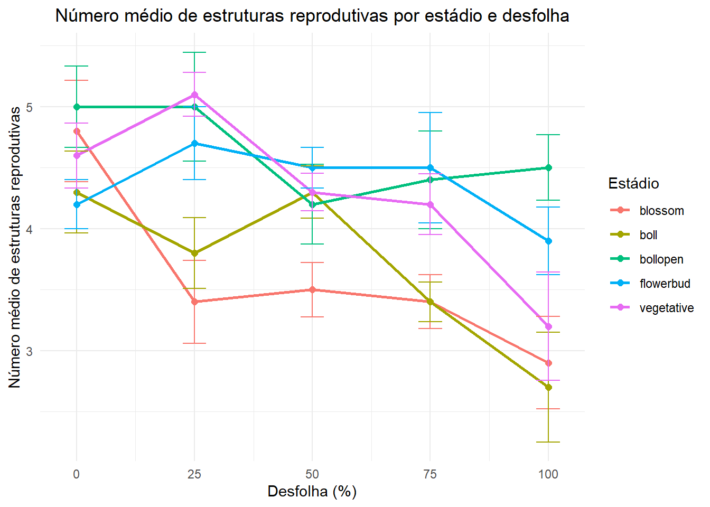
Gráfico dinâmico
# Gráfico base com ajustes de group
gif <- ggplot(dados_summary, aes(x = defoliation, y = mean_reproductive, color = stage, group = stage)) +
geom_line(aes(group = stage), size = 1) +
geom_point(aes(group = stage), size = 2) +
geom_errorbar(aes(ymin = mean_reproductive - se_reproductive, ymax = mean_reproductive + se_reproductive), width = 5) +
labs(
title = "Número médio de estruturas reprodutivas por estádio e desfolha",
x = "Desfolha (%)",
y = "Número médio de estruturas reprodutivas",
color = "Estádio"
) +
theme_minimal() +
theme(plot.title = element_text(hjust = 0.5))
# Animação com transition_reveal
gif_rep <- gif + transition_reveal(along = defoliation)
# Animação com renderer gifski (mais estável)
animated_gif2 <- animate(gif_rep, renderer = gifski_renderer())
animated_gif2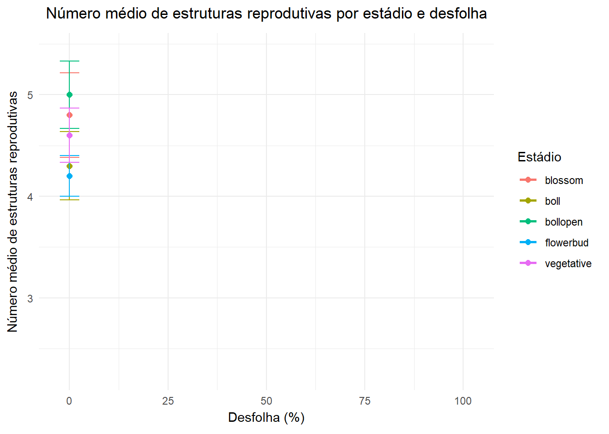
# Salvar o GIF
anim_save("imgs/gif_rep.gif", animation = animated_gif2)Número de maçãs
# Calcular média e erro padrão por stage x defoliation para 'bolls'
dados_summary <- dat %>%
group_by(stage, defoliation) %>%
summarise(
mean_bolls = mean(bolls),
sd_bolls = sd(bolls),
n = n(),
se_bolls = sd_bolls / sqrt(n)
) %>%
ungroup()
# Garantir que defoliation é numérico (caso venha como fator/character)
dados_summary$defoliation <- as.numeric(as.character(dados_summary$defoliation))
# Plotar gráfico para 'bolls'
ggplot(dados_summary, aes(x = defoliation, y = mean_bolls, color = stage, group = stage)) +
geom_line(size = 1) +
geom_point(size = 2) +
geom_errorbar(aes(ymin = mean_bolls - se_bolls, ymax = mean_bolls + se_bolls), width = 5) +
labs(
title = "Número médio de maçãs por estádio e desfolha",
x = "Desfolha (%)",
y = "Número médio de maçãs",
color = "Estádio"
) +
theme_minimal() +
theme(plot.title = element_text(hjust = 0.5))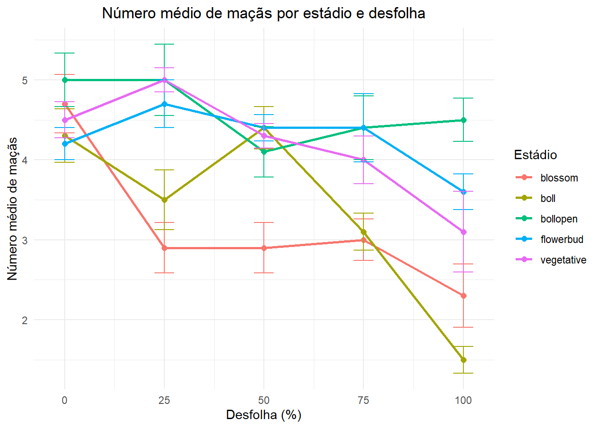
Gráfico dinâmico
# Gráfico base com ajustes de group
gif <- ggplot(dados_summary, aes(x = defoliation, y = mean_bolls, color = stage, group = stage)) +
geom_line(aes(group = stage), size = 1) +
geom_point(aes(group = stage), size = 2) +
geom_errorbar(aes(ymin = mean_bolls - se_bolls, ymax = mean_bolls + se_bolls), width = 5) +
labs(
title = "Número médio de maçãs por estádio e desfolha",
x = "Desfolha (%)",
y = "Número médio de maçãs",
color = "Estádio"
) +
theme_minimal() +
theme(plot.title = element_text(hjust = 0.5))
# Animação com transition_reveal
gif_bolls <- gif + transition_reveal(along = defoliation)
# Animação com renderer gifski (mais estável)
animated_gif3 <- animate(gif_bolls, renderer = gifski_renderer())
animated_gif3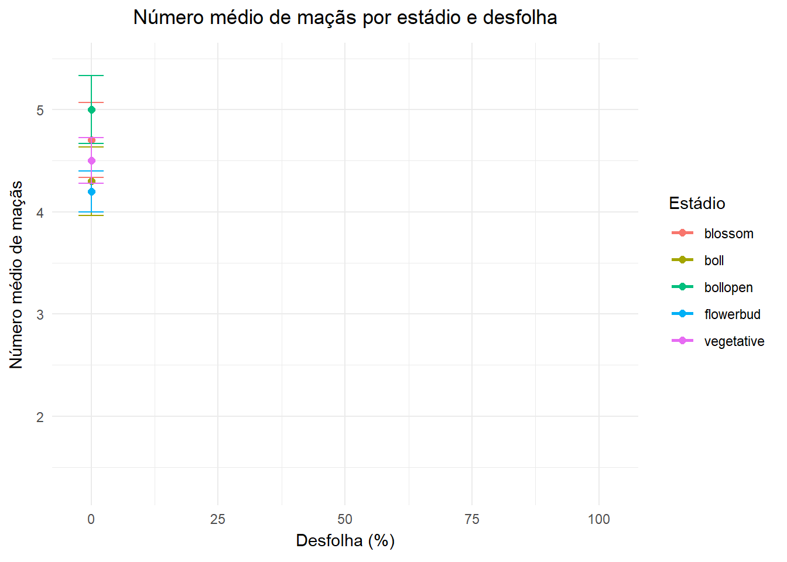
# Salvar o GIF
anim_save("imgs/gif_bolls.gif", animation = animated_gif3)Altura da planta
# Calcular média e erro padrão por stage x defoliation para 'height'
dados_summary <- dat %>%
group_by(stage, defoliation) %>%
summarise(
mean_height = mean(height),
sd_height = sd(height),
n = n(),
se_height = sd_height / sqrt(n)
) %>%
ungroup()
# Garantir que defoliation é numérico (caso venha como fator/character)
dados_summary$defoliation <- as.numeric(as.character(dados_summary$defoliation))
# Plotar gráfico para 'height'
ggplot(dados_summary, aes(x = defoliation, y = mean_height, color = stage, group = stage)) +
geom_line(size = 1) +
geom_point(size = 2) +
geom_errorbar(aes(ymin = mean_height - se_height, ymax = mean_height + se_height), width = 5) +
labs(
title = "Altura média das plantas por estádio e desfolha",
x = "Desfolha (%)",
y = "Altura média (cm)",
color = "Estádio"
) +
theme_minimal() +
theme(plot.title = element_text(hjust = 0.5))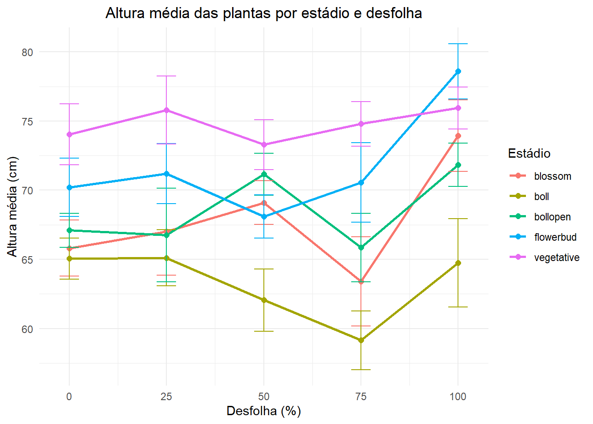
Gráfico dinâmico
# Gráfico base com ajustes de group
gif <- ggplot(dados_summary, aes(x = defoliation, y = mean_height, color = stage, group = stage)) +
geom_line(aes(group = stage), size = 1) +
geom_point(aes(group = stage), size = 2) +
geom_errorbar(aes(ymin = mean_height - se_height, ymax = mean_height + se_height), width = 5) +
labs(
title = "Altura média das plantas por estádio e desfolha",
x = "Desfolha (%)",
y = "Altura média (cm)",
color = "Estádio"
) +
theme_minimal() +
theme(plot.title = element_text(hjust = 0.5))
# Animação com transition_reveal
gif_hei <- gif + transition_reveal(along = defoliation)
# Animação com renderer gifski (mais estável)
animated_gif4 <- animate(gif_hei, renderer = gifski_renderer())
animated_gif4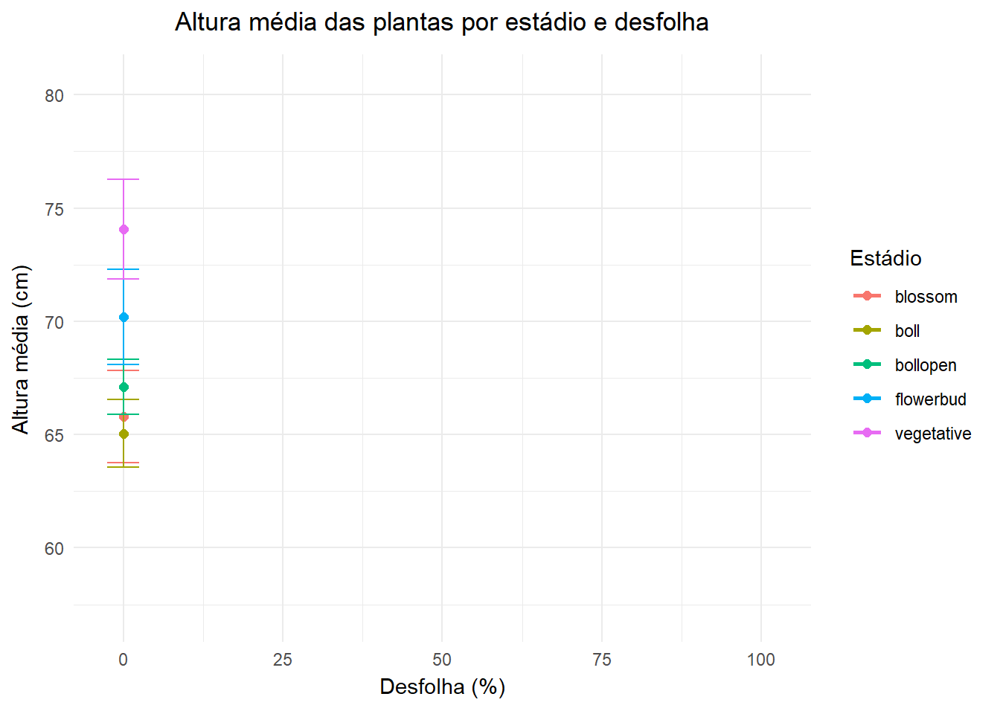
# Salvar o GIF
anim_save("imgs/gif_height.gif", animation = animated_gif4)Número de nós
# Calcular média e erro padrão por stage x defoliation para 'nodes'
dados_summary <- dat %>%
group_by(stage, defoliation) %>%
summarise(
mean_nodes = mean(nodes),
sd_nodes = sd(nodes),
n = n(),
se_nodes = sd_nodes / sqrt(n)
) %>%
ungroup()
# Garantir que defoliation é numérico (caso venha como fator/character)
dados_summary$defoliation <- as.numeric(as.character(dados_summary$defoliation))
# Plotar gráfico para 'nodes'
ggplot(dados_summary, aes(x = defoliation, y = mean_nodes, color = stage, group = stage)) +
geom_line(size = 1) +
geom_point(size = 2) +
geom_errorbar(aes(ymin = mean_nodes - se_nodes, ymax = mean_nodes + se_nodes), width = 5) +
labs(
title = "Número médio de nós por estádio e desfolha",
x = "Desfolha (%)",
y = "Número médio de nós",
color = "Estádio"
) +
theme_minimal() +
theme(plot.title = element_text(hjust = 0.5))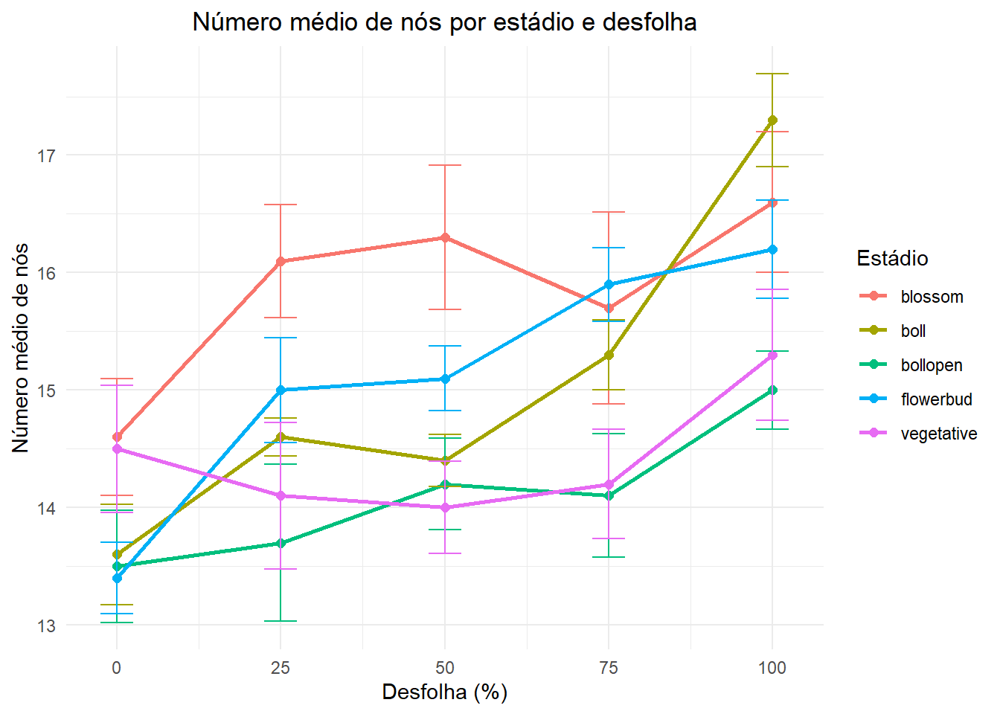
Gráfico dinâmico
# Gráfico base com ajustes de group
gif <- ggplot(dados_summary, aes(x = defoliation, y = mean_nodes, color = stage, group = stage)) +
geom_line(aes(group = stage), size = 1) +
geom_point(aes(group = stage), size = 2) +
geom_errorbar(aes(ymin = mean_nodes - se_nodes, ymax = mean_nodes + se_nodes), width = 5) +
labs(
title = "Número médio de nós por estádio e desfolha",
x = "Desfolha (%)",
y = "Número médio de nós",
color = "Estádio"
) +
theme_minimal() +
theme(plot.title = element_text(hjust = 0.5))
# Animação com transition_reveal
gif_nodes <- gif + transition_reveal(along = defoliation)
# Animação com renderer gifski (mais estável)
animated_gif5 <- animate(gif_nodes, renderer = gifski_renderer())
animated_gif5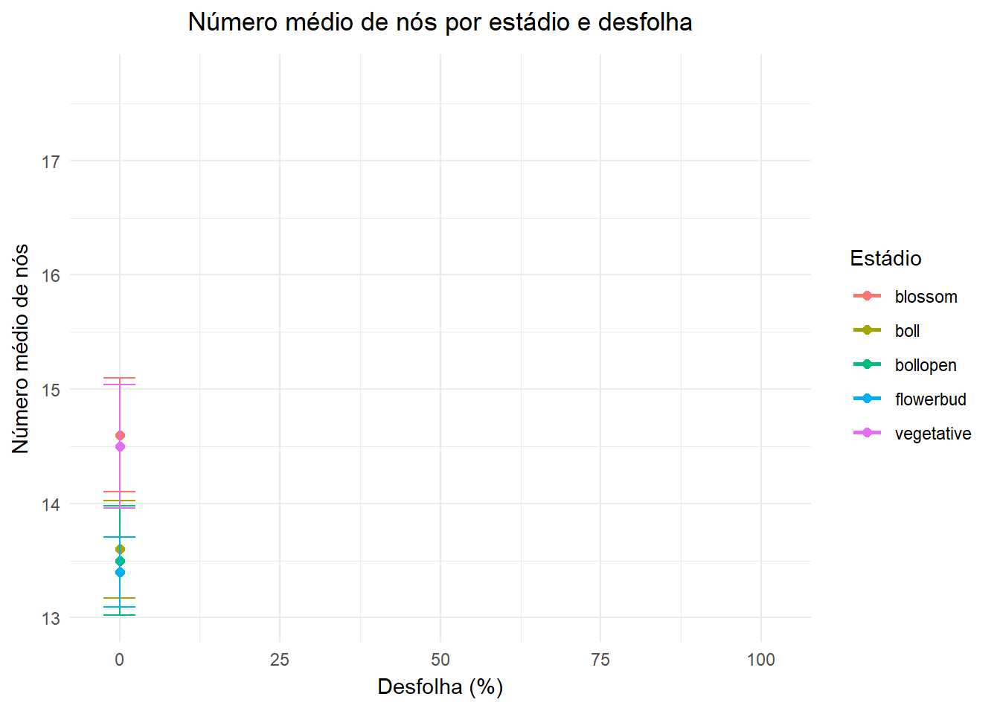
# Salvar o GIF
anim_save("imgs/gif_nodes.gif", animation = animated_gif5)Gráfico de tendências individuais
# Convertendo as variáveis categóricas
dat$stage <- as.factor(dat$stage)
dat$defoliation <- as.factor(dat$defoliation)
dat_long <- dat |>
pivot_longer(cols = c(height, nodes, reproductive, bolls, weight),
names_to = "variavel_resposta",
values_to = "valor") #reorganizando os dados para formato longo
# Gráfico: número de capulhos por nível de desfolha, colorido por estádio
ggplot(dat_long, aes(x = defoliation, y = valor)) +
geom_jitter(position = position_jitter(width = 0.1), size = 2, alpha = 0.8) +
# Linha de tendência ligando as médias por estádio
stat_summary(fun = mean, geom = "line", aes(group = 1), color = "red", size = 0.75) +
# Pontos de média
stat_summary(fun = mean, geom = "point", shape = 18, size = 4, color = "red") +
labs(title = NULL,
x = "Nível de desfolha", y = NULL) +
facet_grid(rows = vars(variavel_resposta), cols = vars(stage), scales = "free_y") +
theme_gray()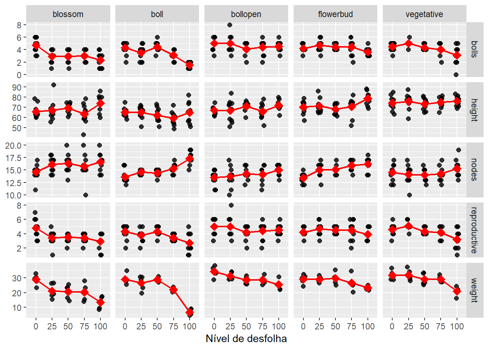